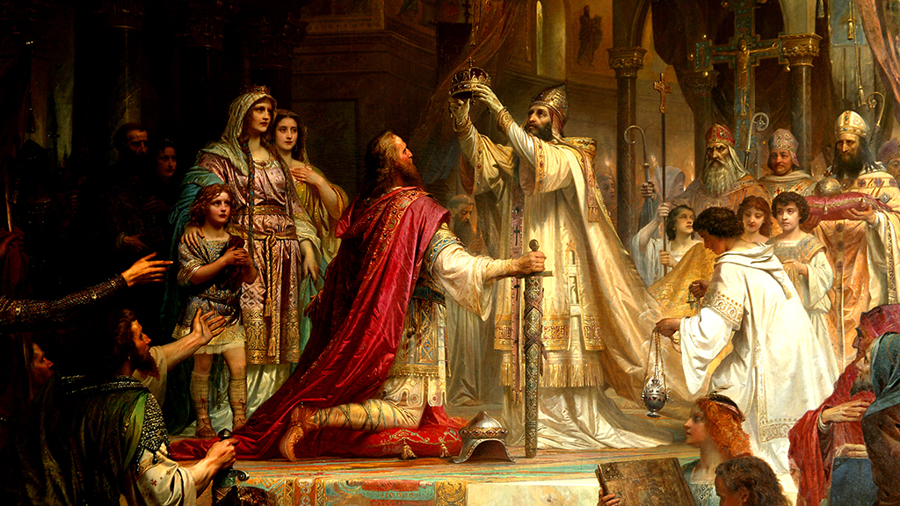

В воскресенье 2 февраля 962 г. после торжественной встречи папа вручил королю Восточно-Франкского государства Оттону I императорскую корону в церкви святого Петра.

А император обещал возвратить прежние церковные владения пап.
Так была основана Священная Римская империя германской нации.
Оттон I стал королем в 936 году. В 955 немецкие и чешские войска под командованием Оттона I нанесли поражение венграм на Лехе, остановив их дальнейшее продвижение на запад. В 951 подчинил Ломбардию, принял титул итальянского короля. В 961 под видом оказания помощи изгнанному римским населением папе Иоанну XII предпринял поход на Рим и 2 февраля 962 принял из рук папы императорскую корону.